5.3.3 BLE and LCC Transparent UART
This section explains how to integrate a Low Cost Controllerless (LCC) graphics display with Bluetooth® Low Energy (BLE) technologies using the PIC32-BZ6 Curiosity Board. The guide provides step-by-step instructions on setting up a BLE central thermostat device capable of communicating with up to eight peripheral devices that support transparent service, including smartphones running the Microchip Bluetooth Data (MBD) application. Users will learn how to utilize the Microchip Graphics Composer to create a simple thermostat application using various widgets. The application provides real-time temperature measurements using the onboard temperature sensor.
This demonstration highlights how data received from peripheral devices can be displayed on the screen, and how multiple devices can be managed through the graphical user interface (GUI). Users will also learn how to send BLE packets from the PIC32-BZ6 Curiosity Board to any of the connected peripheral devices.
Throughout the section, users will explore various GUI widgets and discover how the PIC32-BZ6 Curiosity Board can support complex applications that display multiple data points simultaneously. This comprehensive guide ensures that users can effectively leverage the capabilities of the PIC32-BZ6 Curiosity Board for advanced BLE and display integration projects.
Recommended Reading
-
Getting Started with Application Building Blocks – See Building Block Examples from Related Links.
-
Getting Started with Central Building Blocks – See Central Devices from Related Links.
- See BLE Connection from Related Links.
- See BLE Transparent UART from Related Links.
- BLE Software Specification – See MPLAB® Harmony Wireless BLE in Reference Documentation from Related Links.
Hardware Requirement
| S. No. | Tool | Quantity |
|---|---|---|
| 1 | PIC32-BZ6 Curiosity Board | 3 |
| 2 | USB-C cable | 3 |
| 3 | RGB332 Adapter | 1 |
| 4 | 4.3’’ WQVGA Display | 1 |
SDK Setup
Refer to Getting Started with Software Development from Related Links.
Software Requirement
- To install Tera Term tool, refer to the Tera Term web page in Reference Documentation from Related Links.
Smart phone App
- Microchip Bluetooth Data (MBD)
Programming the Precompiled Hex File or Application Example
Using MPLAB® X IPE:
- Import and program the precompiled hex
file:
<Harmony Content Path>\wireless_apps_pic32_bz6\apps\ble\peripheral_applications\lcc_central_trp_uart\precompiled_hex. - For detailed steps, refer to Programming a Device in MPLAB®
IPE in Reference Documentation from Related Links.Note: Ensure to choose the correct Device and Tool information.
Using MPLAB® X IDE:
- Perform the following the steps mentioned in Running a Precompiled Example. For more information, refer to Running a Precompiled Application Example from Related Links.
- Open and program the application
lcc_central_trp_uart.Xlocated in<Harmony Content Path>\wireless_apps_pic32_bz6.\apps\ble\peripheral_applications\lcc_central_trp_uart \firmware - For more details on how to find the Harmony Content Path, refer to Installing the MCC Plugin from Related Links.
Demo Description
The following diagram shows the basic flow of the demonstration.
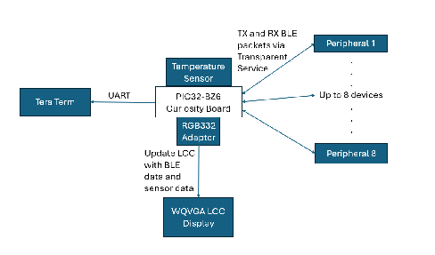
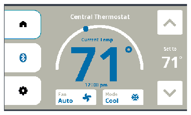
There are various screens the user can navigate to (home, BLE options, and settings) via button presses. There are other GUI components such as buttons to control the fan, mode, and to increase or decrease the temperature. The semicircular gauge in the center of the screen will rotate clockwise with increasing temperature readings and counter clockwise with decreasing temperature readings.
If the “Set To” temperature is greater than the onboard temperature reading, then the thermostat will transition to “Heat” mode and the color scheme will be orange. Conversely, if the “Set To” temperature is less than the onboard temperature reading, then the thermostat will transition to “Cool” mode and the color scheme will be blue.
This system acts as a BLE central device that is capable of scanning, connecting, and communicating with up to 8 peripherals. Within the “Scan” page, devices scanned will be added to a list widget. When devices in the list are selected by the user, a connection will attempt to be made. A mobile phone with the MBD app or devices like WBZ351, WBZ451, or another PIC32-BZ6 Curiosity Board that support transparent service can be connected to, otherwise connection will fail. In either case a message will display announcing the connection status.
peripheral_uart_trp application, the user must comment out the lines
in app_ble.c that assign the MAC address in the
peripheral_uart_trp application code. These devices must be reprogrammed
after making these changes in the peripheral_uart_trp application code. In
order for a connection to be made, the MAC address must be unique and the default
peripheral_trp_uart applications for these devices set the MAC address to
the same address. 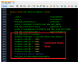
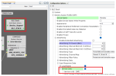
The default peripheral_trp_uart application for WBZ451 does not include
“0xDAFE” as the service UUID. To scan the default peripheral_trp_uart WBZ451
devices, the user can disable the scan filter OR modify the service UUID in the BLE Stack MCC
Configuration Options under the “Service UUID” section in the
peripheral_trp_uart project graph. The code must be regenerated and
programmed to the peripheral device for the changes to take place.
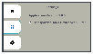
The scan filter is enabled by default.
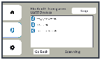
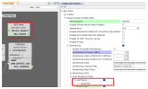
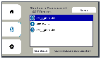
Within the BLE options page, we present an environment to scan/connect, communicate, and manage up to 8 peripheral devices.
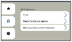
Within the “Data Communication” page, devices that have been connected to will be displayed within another list.
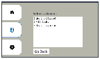
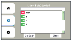
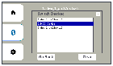
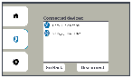
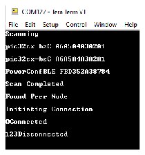
The output will show when scanning was initiated and completed. It will also show which devices were scanned and their address. When a connection is attempted, the connection status will also be printed. The data received from the peripheral (“123” in the image) will be shown. Finally, when the device is disconnected, a “Disconnected” message will also be printed.
Besides the disconnect message, all these messages will also be displayed somehow in the GUI. To know if a device was disconnected, it will be removed from the list on the Manage Connected Devices page.
Testing
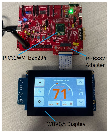
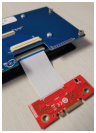
Make sure the cable is connected to a correct position of the LCD module as shown in the above picture.
This demo utilizes two additional PIC32-BZ6 Curiosity Boards configured as BLE Transparent UART and one smartphone device with MBD installed (See BLE Transparent UART from Related Links). These devices act as peripherals that advertise and connect to our central PIC32-BZ6 Curiosity Board.
Board1 = PIC32-BZ6 Curiosity Board with lcc_central_trp_uart application programmed
Board2 = PIC32-BZ6 Curiosity Board with peripheral_trp_uart application programmed
Board3 = PIC32-BZ6 Curiosity Board with peripheral_trp_uart application programmed
Phone1 = smartphone with MBD installed
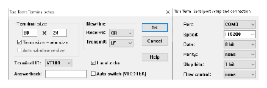
Phone1: To begin advertising on the MBD app, follow the below sequence of events:
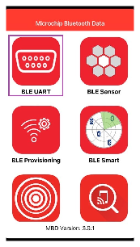
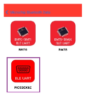
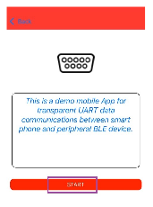
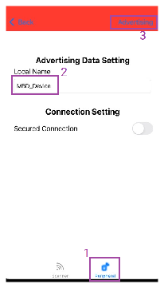
Android MBD Steps
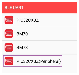
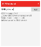
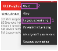
Board 1: Open TeraTerm @ (Speed: 115200, Data: 8-bit, Parity: none, stop bits: 1 bit, Flow control: none). Reset the board.
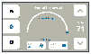
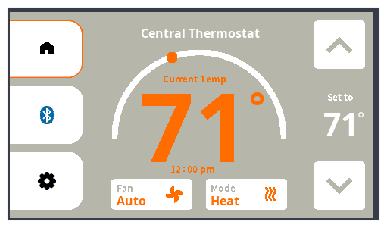
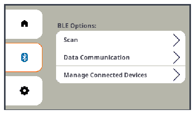
Navigate to the Scan page by selecting the Scan menu button.
Before scanning, recall that the scan filter is enabled by default, which will only display devices that are advertising with “0xDAFE” as the service UUID. To enable or disable this feature, navigate to the settings page by selecting the gear icon at the bottom left of the screen.
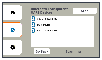
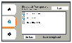
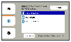
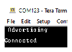
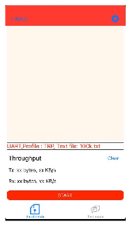
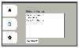
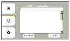
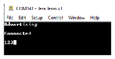
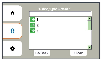
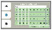
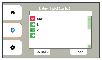
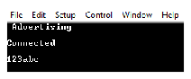
The received data from all connected peripherals will be displayed on the list. The green arrows have a small number that indicates which device sent the packet.
To send packets from MBD to be received by the GUI do the following:
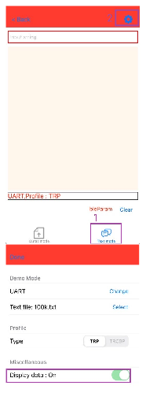
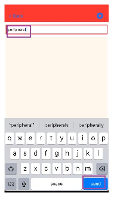
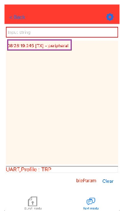
The message will display on Board1’s GUI with a green arrow and a number 2. Received packets with data longer than 25 bytes will be split into multiple lines on the GUI.
To send data to MBD from the GUI, the device must be selected first.
Press the device name text at the top of the page (“1. dev_1_pic32cx-bz6”) to display a popup menu that displays the connected devices. Select MBD_Device to send messages to MBD.
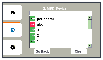
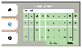
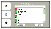
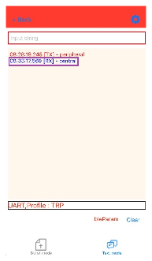
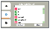
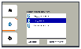
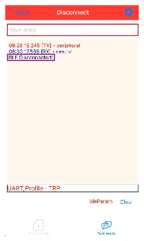
Notice that the index associated with dev_2_pic32cx-bz6 was updated from 3 to 2 once MBD_Device was disconnected. If messages are received from dev_2_pic32cx-bz6 at this point, Commented [AB35]: updated then the number within the green arrow will also be updated to 2 from 3. The indices are only updated when peripheral devices are disconnected.
Developing the Application from Scratch using the MPLAB Code Configurator
-
Create a new harmony project. For more details, see Creating a New MCC Harmony Project from Related Links.
- Import component configuration – This
step helps users setup the basic components and configuration required to develop this
application. The imported file is of format
.mc3and is located in the path “<Harmony Content Path>\wireless_apps_pic32_bz6\apps\ble\peripheral_applications\lcc_central_trp_uart \firmware\lcc_central_trp_uart.X”. - Accept dependencies or satisfiers when prompted.
- Verify if the Project Graph window has
all the expected configuration.
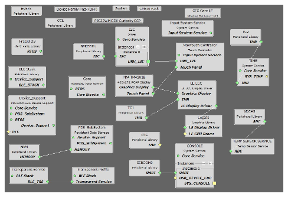
The following components are from the GFX library:
- Gfx Core LE
- Input System Service
- MaxTouch Controller
- PDA TM4301B
- LE LCC
- Legato
This project utilizes the GFX library to generate the code needed for graphics projects. Refer Harmony guide Getting Started with Microchip Graphics Suite (MGS) Harmony in Reference Documentation from Related Links for graphics projects. Additionally, it is recommended that users refer to Getting Started with a New Harmony Graphics Application in Reference Documentation from Related Links to learn how to utilize the library to create projects.
Microchip Graphics Suite (MGS) Harmony Composer is a GUI design tool used to create widgets and configure various screens. For more information about the MGS Composer, refer to Microchip Graphics Suite (MGS) Harmony Composer User Guide in Reference Documentation from Related Links.
For more information on the BLE related components, see BLE Transparent UART from Related Links.
GUI Design Decisions
For high resolution displays, one of the main contributors of RAM usage will be the frame buffer which is dictated by the pixel count and cannot be minimized.
Additionally, the scratch buffer contributes heavily to RAM usage. It is used for drawing segments of the screen on page refreshes. This can be increased or decreased but will impact refreshing performance. For detailed information on the scratch buffer, see Adjusting Scratch Buffer Size in Reference Documentation from Related Links.
Lastly, the fixed heaps also contribute to the RAM usage but are dictated by the number of widgets used. for further information about fixed heaps, see Optimizing the Memory Manager Settings in Reference Documentation from Related Links.
Frame Buffer:
Since we are using Hardware setup 3 for this application, our frame buffer will be allocated within the PIC32-BZ6 Curiosity Board. Additionally, we are using RGB332 so we only require a single byte for each pixel. For our 480x272 display, the frame buffer will require 480*272*1byte = 130,560 bytes.
Scratch Buffer:
To minimize our scratch buffer, we recognize that our design mainly updates the center most part of the screen whereas the left of the screen is a secondary update that just changes the button that is selected. Therefore, we implement a ‘single screen’ design that hides and reveals different panels to create the illusion that screens are changing. Specifically, we only update the portion of the screen shown below which is 338x252 pixels large.
Since the largest part of the screen to be updated is 338x252 pixels, we only need to allocate a scratch buffer of size 338*252*1byte = 85,176 bytes.
In MGS Harmony Composer, each ‘screen’ is a panel sized 338x252, with the exception of the home page. To display the home page, all panels are hidden and only the home widgets will display. When another screen is intended to be shown by pressing one of the three buttons on the left of the screen, the panel will display. For example, when the BLE icon button is selected, an event will be generated and the following panel will be made visible and will become enabled.Navigating withing MGS Harmony Composer for the Thermostat GUI
- Since everything is implemented on one screen, the other pages are not visible by default. To view another page, select the panel you would like to view in the Screen Tree, then select visible in the Object Editor. For example, if we want to see the BLE options page, the procedure is as follows:
- Adding Widgets: Refer to
Widgets Guide in Reference Documentation from Related Links.New widgets can be dragged and dropped into the MGC screen. Widgets:Events are disabled for new widgets by default, so they must be enabled if needed. Also, if an event is enabled, the event handler must be defined in the code otherwise the build will fail. See below for details about events.
- Fixed Heaps: If a new widget is added, you must increase the number of fixed heaps and reoptimize later (notes on optimization later). Increase all fixed heap sizes by a large amount during development to avoid crashes. Fixed heaps can be increased in the Memory portion of the Project Settings: If the fixed heaps are increased in the project settings, the code must be regenerated to reflect the changes in the code.
- Events: Refer to Creating a
Dynamic UI with Event Handling in Reference Documentation from Related
Links.Events can be enabled or disabled in MGC in the Event Manager under Project:Events can also be enabled or disabled in the Object Editor when a widget is selected.
- Events are handled in the
app_screen_splash.candapp_screen_main.cfiles found in thelcc_central_trp_uart\firmware\srcfolder. For example, when the BLE button is pressed, the event handler is as follows:In this code, all other panels are disabled and made invisible, and only the BLE options panel is enabled and made visible.
- Images, fonts, and strings can be
added and managed in their respective pages found under Asset:
MGC Assets Guide: Refer to Microchip Graphics Suite (MGS) Harmony Graphics Assets Guide in Reference Documentation from Related Links.
- Color Schemes Guide: Refer to
About the Schemes and Scheme Editor in Reference Documentation from
Related Links.The available schemes in the project can also be used.
LightMode is used for the background color of the panels. GrayScheme is used for the gray color of text. HeatingScheme is used for the orange color of text. CoolScheme is used for blue color of text. WhiteScheme is used for white color of text.
Notes about reoptimizing fixed heaps:
Refer to Optimizing the Memory Manager Settings in Reference Documentation from Related Links.
After adding more widgets to the design, the fixed heaps can be increased and reoptimized. The GFX library provides a function called leMemoryPrintReport() that can print out the fixedHeap usage of the GUI to a terminal.
Below is an example of how the fixedHeaps can be optimized with this thermostat GUI using Debug mode and breakpoints rather than printing out the fixedHeap usage report.
- First increase all heap sizes by at least 5 for each new widget added.
- Second, uncomment the following line in
app_screen_main.c. - Then, enable a breakpoint in the
leMemoryPrintReport() function in
legato_memory.c. - Add a watch to the fixedHeaps array.
- Run the project in Debug mode.
- Run through the entire GUI, selecting all
buttons and making all panels visible at least once. Do not press the temperature down
button until the very end.
Once the down button is pressed, the program will break, and you can analyze the fixedHeaps array to see the max usage.
- After all buttons are pressed and the
down button is pressed last, the program will break. In the “Watches” tab, you can view
the fixedHeaps array. Here you can view each fixed heaps logical block size and their max
usage:
fixedHeaps[0] corresponds to LE_FIXEDHEAP_SIZE_16 in legato_config.h. fixedHeaps[1] corresponds to LE_FIXEDHEAP_SIZE_32. fixedHeaps[2] corresponds to LE_FIXEDHEAP_SIZE_64 and so on.
-
Set the fixed heap sizes to the maxUsage number.
Reprogram the device not in debug mode and run through the entire GUI to ensure there are no crashes.
Tasks and Task Priority
The above diagram shows the multiple tasks running simultaneously. Input system service, LCC, Legato, and MaxTouch Controller all come from GFX while BLE and App core do not. Legato and LCC have higher priority than MaxTouch to prioritize screen updates over touch events but lower priority than BLE to avoid throughput deterioration.
Generating Code
For more details on code generation, refer to MPLAB Code Configurator (MCC) Code Generation from Related Links.
Files and Routines Automatically generated by the MCC
For details about the BLE configuration that is generated, see BLE Transparent UART from Related Links.
For details about GFX code generation, see Getting Started with a New Harmony Graphics Application in Reference Documentation from Related Links.
User Application Development
Include
definitions.hin all the files where UART will be used to print debug information.
- Include the user action. For more information, refer to User Action from Related Links.
Pin Settings
Unique Files
| File | Added or Edited | Notes |
|---|---|---|
app.c | Edited | Maintains app state machine. Added OSAL queue callbacks for trp service and a timer callback for the clock. Added to the initialization. |
app.h | Edited | — |
app_ble.c | Edited | Added a function to update and store scanned devices. Configured as active scan. |
app_ble.h | Edited | — |
app_ble_handler.c | Edited | Maintain a connection handle list when connections are established and destroyed. Maintain a scanned device list. |
app_ble_handler.h | Edited | — |
app_ble_utility.c | Edited | Added two functions. One for parsing advertisements and extracting the name of the device. The other function converts hex to ascii. |
app_ble_utility.h | Edited | — |
app_trspc_handler.c | Edited | Updates the GUI when data is received. Maintains a list GUI that displays the received data |
app_trspc_handler.h | Edited | — |
default_design.zip | Added | MGS Composer design |
app_macros.h | Added | Holds macros for gfx library |
app_screen_main.c | Added | Holds GUI event handling for the main screen |
app_screen_main.h | Added | — |
app_screen_splash.c | Added | Holds GUI event handling for the initial screen. |
Widgets within app_screen_main.c
The following table shows the widgets with their accompanying event handlers.
| Widget | Event handler | Notes |
|---|---|---|
| N/A | This displays the current temperature reading from the onboard temperature sensor. It is read every one second, but the temperature displayed is an average of 5 measurements. The small blue circle will move along the white arc with increasing or decreasing temperature readings. | |
| N/A | This displays the desired temperature. | |
| event_Main_UpButton_OnPressed(leButtonWidget* btn) | This increases the “Set To” temperature on the home screen. If the “Set To” temperature is greater than the onboard temperature reading, then the thermostat will transition to “Heat” mode and the color scheme will be orange. | |
| event_Main_DownButton_OnPressed(leButtonWidget* btn) | This decreases the “Set To” temperature on the home screen. If the “Set To” temperature is less than the onboard temperature reading, then the thermostat will transition to “Cool” mode and the color scheme will be blue. | |
| event_Main_home_button_OnPressed(leButtonWidget* btn) | Hides all other panels and shows home screen | |
| event_Main_ble_button_OnPressed(leButtonWidget* btn) | Hides all other panels and displays BLE options panel | |
| event_Main_settings_button_OnPressed(leButtonWidget* btn) | Hides all other panels and displays the settings panel | |
| event_Main_fan_button_OnPressed(leButtonWidget* btn) | Changes the Fan Mode String (Auto, On, Off) | |
| Main_mode_button_OnPressed(leButtonWidget* btn) | Changes the Mode string (Cool, Heat) and changes the color scheme. | |
| event_Main_ScannedDevs_0_OnSelectionChanged(leListWidget* wgt, uint32_t idx, leBool selected) | On the Manage Connected Devices screen. Used to set the ID for the disconnect event/ | |
| event_Main_DisconnectButton_OnPressed(leButtonWidget* btn) | Manually disconnect from a device. Updates the GUI and generates Disconnect event. BLE_GAP_EVT_DISCONNECTED in app_ble_handler.c will maintain the connection handle list and handle cases where the GUI was busy when a spontaneous disconnect occurs. | |
| event_Main_GoBackButton_OnPressed(leButtonWidget* btn) | Hides other subpanels and displays BLE options page. | |
| event_Main_scan_option_OnPressed(leButtonWidget* btn) | Display the Scan panel | |
| event_Main_text_window_option_OnPressed(leButtonWidget* btn) | Displays the Data Communication panel where users select a device they want to communicate with | |
| event_Main_manage_option_OnPressed(leButtonWidget* btn) | Displays the Manage Connected Devices panel where devices can be manually disconnected | |
| event_Main_connectedDevs_OnSelectionChanged(leListWidget* wgt, uint32_t idx, leBool selected) | Go to the BLE communication panel with the selected device as the title. Set the main index so trp service is associated with this device. | |
| event_Main_scan_OnPressed(leButtonWidget* btn) | Start the scan | |
| event_Main_scan_OnReleased(leButtonWidget* btn) | End the scan | |
| event_Main_ScannedDevs_OnSelectionChanged(leListWidget* wgt, uint32_t idx, leBool selected) | Attempt to establish a connection with the selected device. Add device to our
connected device lists. BLE_GAP_EVT_CONNECTED event in
app_ble_handler.c will maintain the connection handle
list. | |
| event_Main_InputField_OnFocusChanged(leTextFieldWidget* btn, leBool state) | Displays the keyboard | |
| event_Main_KeyPadWidget_0_OnKeyClick(leKeyPadWidget* wgt, leButtonWidget* cell, uint32_t row, uint32_t col) | Checks if the shift key (“^”) was pressed. If it was, make the keyboard characters uppercase. For additional information, refer to How-To Create a Numeric Keypad in Reference Documentation from Related Links. | |
| event_Main_send_OnPressed(leButtonWidget* btn) | Queue an event to send the data using transparent service. Update the DataField list buffers. | |
| event_Main_cancel_OnPressed(leButtonWidget* btn) | Close the keyboard | |
|
event_Main_ClearButton_OnPressed(leButtonWidget* btn) | Clears the TX/RX list | |
|
event_Main_DevNameButton_OnPressed(leButtonWidget* btn) | Displays a popup menu listing all connected peripheral devices. Selecting a device from the list sets it as the target for outgoing BLE messages from the central GUI. The GUI will continue to receive data from all connected peripherals, but only the selected device will receive messages sent from the GUI. | |
|
event_Main_close_OnPressed(leButtonWidget* btn) | Close the popup window | |
| Enables or disables a flag that controls whether to display scanned devices without service UUID “0xDAFE” |
Additional GUI Interaction within app_main_screen.c
All interaction with the GUI should be implemented within
app_main_screen.c. Therefore, there are additional functions defined
within app_main_screen.c.
- Lists that are dynamically updated
require special care.
- The contents of the scanned peripherals list are updated on a timer. Specifically, TimerCallback2()
- The contents of the data field list
are also updated on a timer. The timer callback is in
app.cbut the contents are updated while the GUI is in the APP_MAIN_STATE_PROCESSING state.
- Additional helper functions
- clearDevList() clears the contents of the scanned peripherals list.
- clearSentList() clears the Data Field list when another device is selected for communication or upon disconnect.
- shuffleDynamicStringListLeft() is used to maintain the connected device dynamic string list upon disconnect.
- shuffleBLEListLeft() is used to maintain the connected device list of type APP_BLE_ScannedDev.
- MainScrn_UpdateClock() is used to update the clock that is displayed on the main screen, it is called every second.
- MainScrn_UpdateMode() is used to update the Mode string on the home page and change the color scheme.
- MainScrn_UpdateFan() is used to update the fan string.
- Screen event callbacks
- The Main_OnShow() function is the function called only once when the screen is first shown.
- Main_OnHide() is the function called when another screen is made visible. Since this design is a singe screen. implementation, this function will not be called.
- Main_OnUpdate() is periodically called to update the GUI. A state machine is maintained to update certain parts of the GUI.
BLE Implementation
Active scanning mode is enabled to scan for MBD in app_ble.c. A struct
called APP_BLE_ScannedDev holds the name, address, index, and connection handle for each
scanned device and each connected device.
Additionally, only information involving the device name and address is extracted to
display the name in the GUI and use the address to check if we are already connected. The
functions associated with parsing the advertisements is APP_Adv_Parser() and
APP_HexToAscii() in app_ble_utility.c. The name and address are associated
with each APP_BLE_ScannedDev scanned.
On an advertisement report event, “BLE_GAP_EVT_ADV_REPORT,” if the scan filter is enabled, the system will parse the advertisement data to check if the service UUID is 0xDAFE. If it is, then the device will be stored and displayed on the GUI. If the scan filter is disabled, all scanned devices will be displayed on the GUI.
When a device is connected successfully, the connection handle is captured in a list so we can utilize each device’s connection handle when communicating.
When a disconnect occurs, the corresponding connection handle is removed from our list.
These events are BLE_GAP_EVT_CONNECTED and BLE_GAP_EVT_DISCONNECTED in
app_ble_handler.c.
When data is received from a peripheral, BLE_TRSPC_EVT_RECEIVE_DATA in
app_trspc_handler.c handles the GUI DataField list update to display the
new message.
Temperature Sensor Implementation
temp_sensor.c will be generated.From here, the function MCP9700_Temp_Fahrenheit() can be called to get the temperature
reading in Fahrenheit. Each second, this function will be called within the
app_main_screen.c file to gather a single reading. The temperature
displayed on the home page will be the computed average of the last 5 temperature readings,
therefore the reading on the GUI will be updated every five seconds.